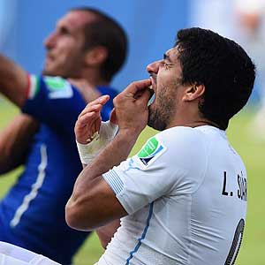
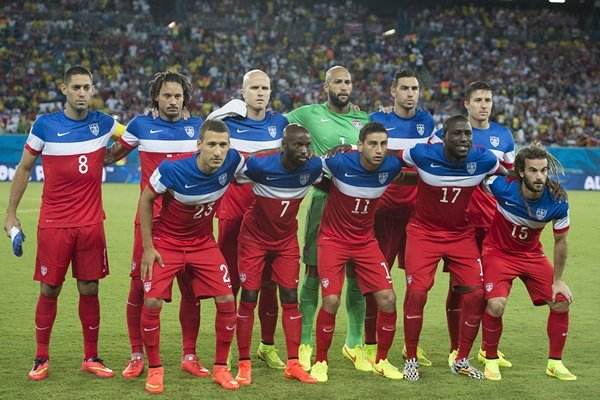

| Lista de Equipos | Calendario y Resultados | Tabla de Grupos |
|---|---|---|
| Goleo Individual | Goleo por Equipos | Estadísticas |
| Noticias | ||
| Captura de Resultados | ||
| Registra Jugadores | ||
| Registra Equipo | ||
|  | La mordida que Luis Suárez le dio a Giorgio Chiellini parece que no quedará impune. La FIFA anunció la noche de este martes que con base en los artículos 48 y 57 del código disciplinario comenzó la investigación de lo ocurrido. En la parte final del juego entre Uruguay e Italia por el pase a los Octavos de Final de la Copa del Mundo Brasil 2014, el delantero del Liverpool, Luis Suárez, mordió al defensa italiano Giorgio Chiellini, hecho que no sancionó en el momento el silbante mexicano Marco Rodríguez. Anteriormente, el jugador ya habí cometido la misma acción en dos ocasiones. La primera, jugando en 2010 con el Ajax de Holanda, cuando mordió a Otman Bakkal del PSV; posteriormente, en 2013 mordió al serbio Branislav Ivanovic, del Chelsea, a quien debió pagarle una fuerte suma de dinero, además de quedar suspendido 10 juegos en la Premier League. El organismo rector del balompié mundial invitó tanto a la Federación de Uruguay como al jugador a presentar pruebas si es que las tienen en defensa de lo ocurrido. |
|  |
Después de haber obtenido un triunfo y un empate, Alemania y Estados Unidos terminan su participación en la Fase de Grupo con la mirada puesta en sellar su clasificación. Si el partido culmina en igualdad ambas escuadras avanzarían a la siguiente ronda; sin embargo antes del encuentro ni uno de ellos estará pensando en algún tipo de arreglo, así lo han declarado las plantillas de ambos conjuntos. En caso de que teutones o estadounidenses se llevaran la victoria, Ghana y Portugal, quienes se enfrentan a la misma hora y quienes apenas suman una unidad podrían soñar en colarse a Octavos de Final. Entre estas Selecciones existen dos antecedentes en Copas del Mundo, ambas ganadas por los alemanes; en Francia 1998 vencieron al son de 2-0 y en 2002 en Japón y Corea los dejaron fuera de Cuartos de Final. |